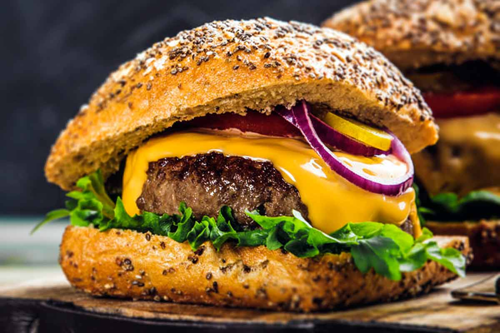

Cheeseburger

Description
When one thinks of American cuisine, the cheeseburger, made with freshly ground chuck, salt, pepper and topped with condiments, is often the first thing to come to mind.
This recipe demonstrates that some of the best things in life are the simplest things.
Ingredients
- 1 ½ pounds of grinded chuck roast
- Healthy pinch of kosher salt
- Freshly cracked black pepper
- 6 slices of sharp cheddar cheese
- 6 hamburger buns
- 1 thinly sliced red onion
- Homegrown or store-bought pickles
- Condiments of your choice
Steps
- Shape the ground chuck into 6 patties, each about 1/2-inch thick. Do not pack the meat too tightly or the burgers will end up dry.
- Toss a healthy pinch of salt over each burger and crack some pepper over the top of each burger.
- Prepare a grill and turn it to medium-high heat for 3 minutes.
- Place the burgers over the heat, seasoned side down. Toss some salt and pepper over the now top of the burgers and cook for 1 to 2 minutes.
- Flip the burgers and cook for 2 minutes more. Flip the burgers again and grill for 1 minute more.
- Flip the burgers again, place a slice of cheese on each burger, and cook for 1 minute more until they are medium-rare.
- Transfer the burgers to a warm plate but do not cover them. Place the hamburger buns, cut side down, on the grill and warm until the desired toastiness.
- Put together the burgers and buns on a separate, clean plate, using any condiments you like.
- Enjoy your burgers.